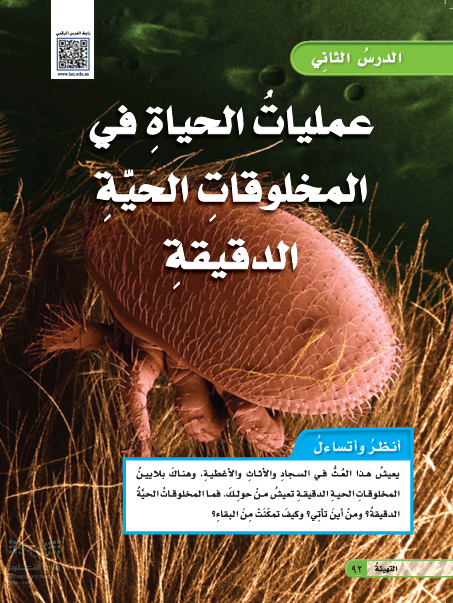
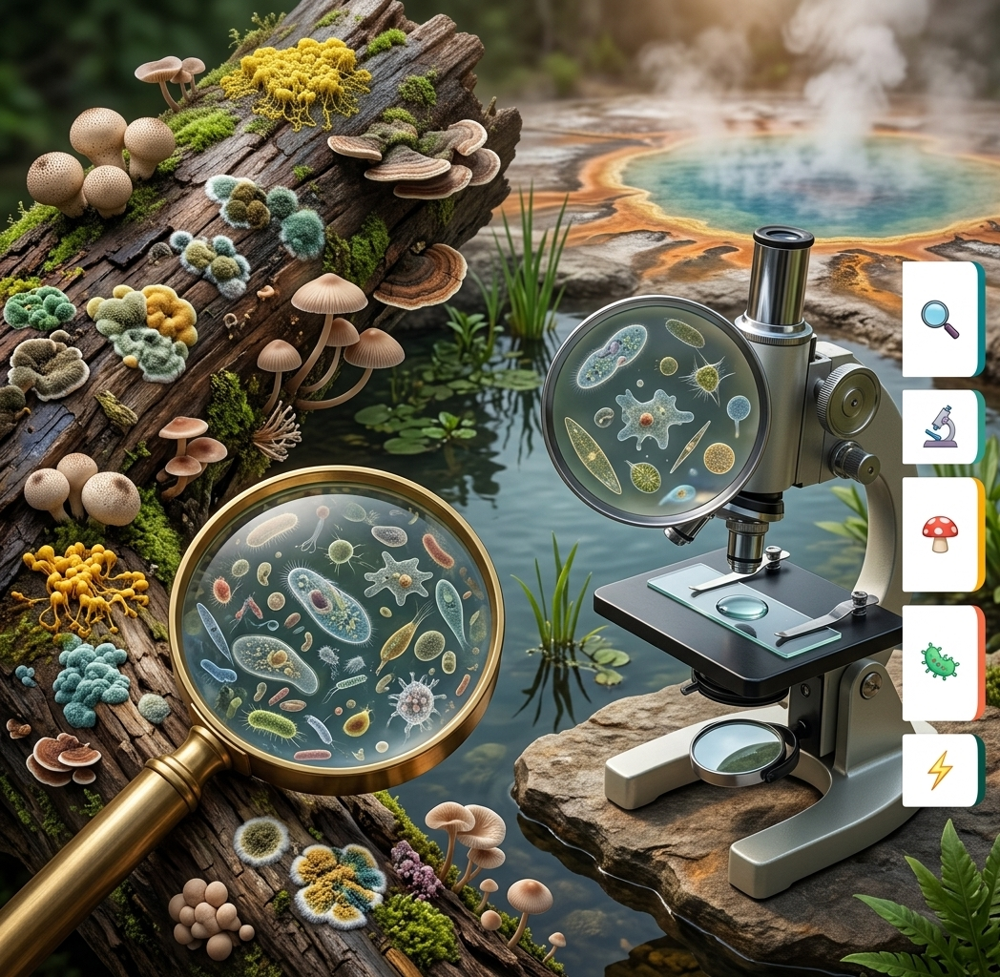
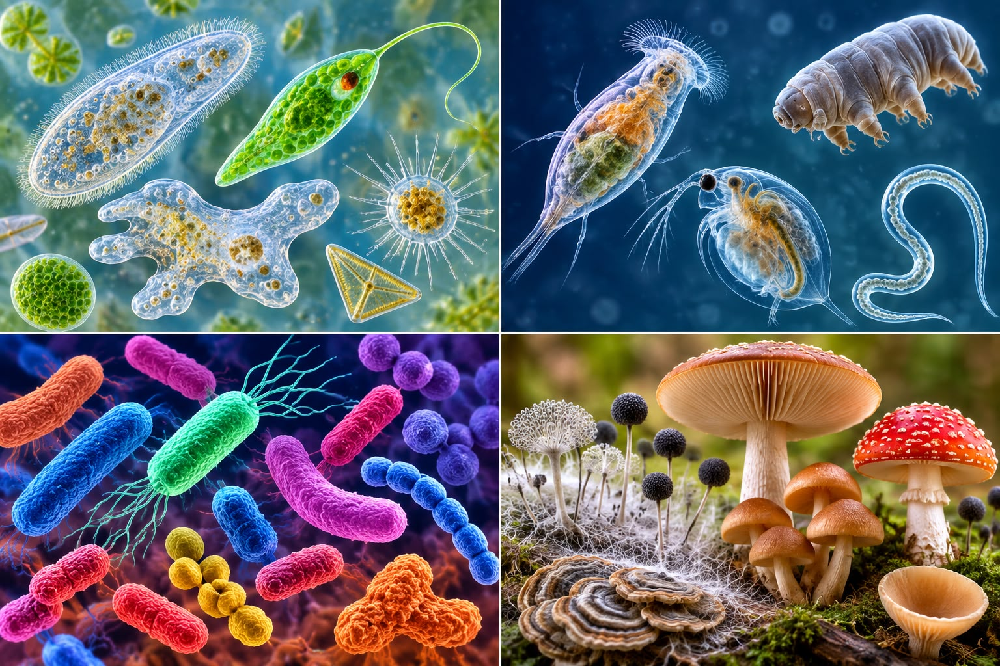
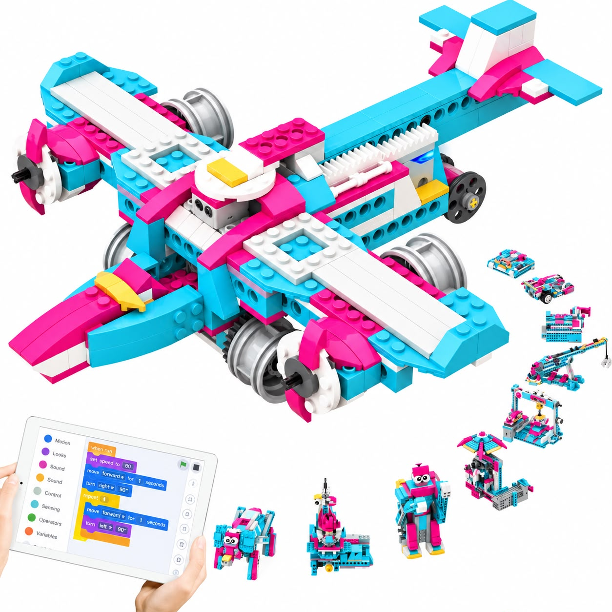
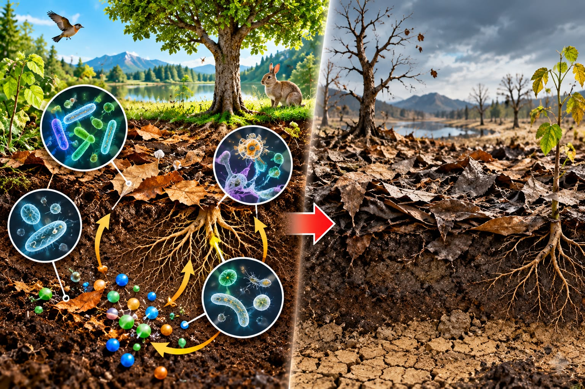

بسم الله الرحمن الرحيم
دمت سالماً يا وطنياللهم احفظ وطننا الغالي المملكة العربية السعودية من كل سوء ومكروه، واحفظ لنا قائدنا وإمامنا خادم الحرمين الشريفين الملك سلمان بن عبدالعزيز آل سعود حفظه الله، وولي عهده الأمين صاحب السمو الملكي الأمير محمد بن سلمان بن عبدالعزيز آل سعود حفظه الله، وأيدهم بالنصر والتمكين وأعزهم بالإسلام، وأعز بهم الإسلام والمسلمين.
الكتاب والقلم
عدم مقاطعة المعلمة
الاستماع الجيد
الابتعاد عن الأحاديث الجانبية
المشاركة الإيجابية
الاستئذان برفع اليد
الوقت
الالتزام بوقت الحصة
النظافة
المحافظة على الغرفة الصفية
ما هو التلقيح في النباتات؟
انقر هنا لعرض الإجابة التفاعلية
عمليات الحياة في المخلوقات الحيّة الدقيقة
الصف السادس الابتدائي - الفصل الدراسي الأول

ماذا أعرف؟
انقر هنا...
ماذا أريد أن أتعلم؟
انقر هنا...
ماذا تعلمت؟
انقر هنا...

تعالوا نشاهد تجربة العالمة تالا الشهراني المنزلية:
شاهدي الفيديو التعليمي التالي بتركيز، ودوني ملاحظاتك لمناقشتها سوياً:
1. الميكروبات
مخلوقات مجهرية لا ترى بالعين، تشمل النافعة والضارة.
2. الفطريات
كالخميرة وعفن الخبز، تستخدم في الأغذية وصنع الأدوية.

3. الطلائعيات
كالأميبا والبراميسيوم واليوجلينا (وحيدة الخلية).
4. البكتيريا والبدائيات
البكتيريا منها المفيد لصنع اللبن، والبدائيات تعيش بظروف قاسية.
علاقة محتوى درسنا بمقرر الدراسات الإسلامية
انقر هنا لعرض العلاقة
علاقة محتوى درسنا بمقرر الدراسات الاجتماعية
انقر هنا لعرض العلاقة
تحدّي العالمات: هل نستطيع اكتشاف ما لا تراه أعيننا؟

«اكتشفتُ عالمًا مليئًا بمخلوقات صغيرة جدًا، لكنني لا أستطيع تحديدها وحدي. هل تساعدنني في استكشافها؟»
تحدّي الروبوت الذكي (انقر على البطاقة لعرض الإجابة):
🧩 حل المشكلات
كيف تساعد الروبوتات العلماء؟
⚖️ التفكير السببي
ماذا لو اختفت المحللات؟

س1: أصغر المخلوقات الحية الدقيقة تنتمي إلى:
س2: مخلوق حي ينمو ويتكاثر على الخبز الرطب، يصنف هذا المخلوق من:
س3: يصنف المخلوق المسبب لمرض (القدم الرياضي) من:
تابعي الرابط الرقمي في المنزل للاستزادة حول معالجة المياه ومستعمرات البكتيريا البدائية:
فتح رابط الإثراء الرقمي ويوتيوب التعليميماذا أعرف؟
أعرف أن البيئة تضم كائنات حية لا ترى بالعين، وأن المخلوقات الحية الدقيقة متنوعة.
ماذا أريد أن أتعلم؟
أريد أن أتعلم ما هي المخلوقات الحية الدقيقة وأنواعها ومواطن عيشها.
ماذا تعلمت؟
• تعلمت ان الكائنات الحية الدقيقة هي مخلوقات مجهرية لا ترى بالعين المجردة.
• تعلمت ان البدائيات و البكتيريا و الفطريات جميعها كائنات دقيقة منها الضار ومنها غير الضار.
المجموعة الفائزة اليوم:
انقر على الزر لإعلان الفائزين 🏆
الواجب:
• حل الواجب الإلكتروني عبر منصة مدرستي.
سجل الإنجاز:
• إضافة مطوية عن الدرس في ملف إنجاز الطالبة.
انتهى الدرس